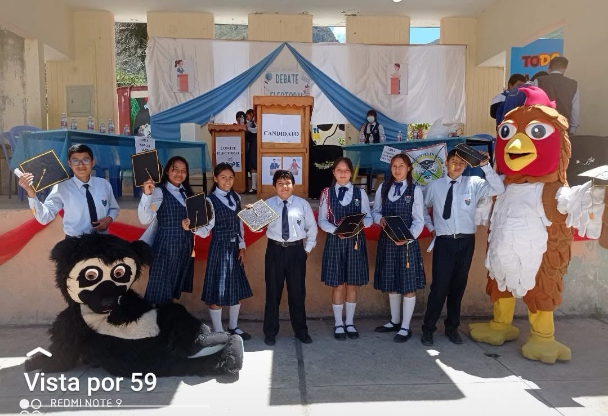
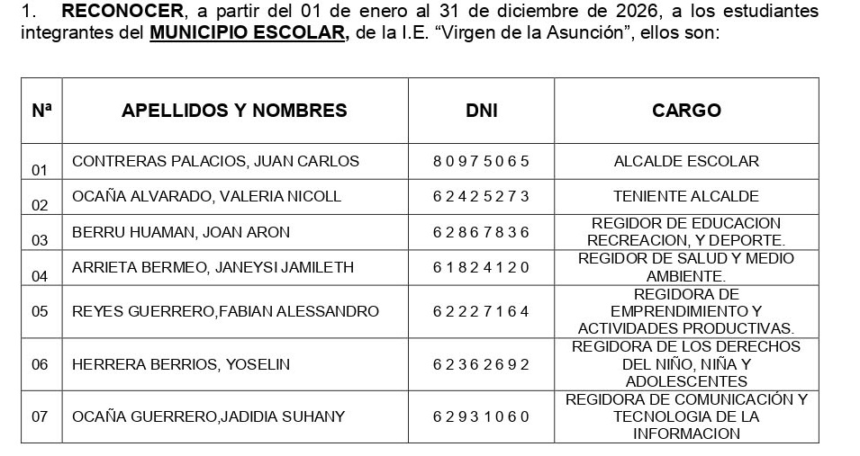

🏛 Proclamación del Municipio Escolar 2026
Con gran orgullo institucional, se reconoce a la lista ganadora
“ESTUDIANTES EN ACCIÓN: PARA UNA NUEVA GENERACIÓN”, la cual asumirá la
responsabilidad de liderazgo estudiantil durante el periodo 2026.


👑 Alcaldía Escolar
Alcalde Escolar: CONTRERAS PALACIOS, JUAN CARLOS
Representa la máxima autoridad estudiantil, lidera la gestión del municipio y coordina actividades institucionales.
Teniente Alcalde: OCAÑA ALVARADO, VALERIA NICOLL
Apoya la gestión del alcalde y supervisa las regidurías.
📋 Regidurías
Educación, Recreación y Deporte: BERRU HUAMAN, JOAN ARON
Promueve actividades académicas, deportivas y culturales.
Salud y Medio Ambiente: ARRIETA BERMEO, JANEYSI JAMILETH
Promueve el cuidado del ambiente y hábitos saludables.
Emprendimiento: REYES GUERRERO, FABIAN ALESSANDRO
Impulsa proyectos productivos y ferias escolares.
Derechos del Niño y Adolescente: HERRERA BERRIOS, YOSELIN
Promueve la convivencia y la inclusión escolar.
Comunicación y Tecnología: OCAÑA GUERRERO, JADIDIA SUHANY
Difunde actividades institucionales en medios digitales.
🤝 Compromiso institucional: esta gestión trabajará junto a docentes,
padres de familia y autoridades locales para fortalecer el liderazgo estudiantil.
← Volver al inicio